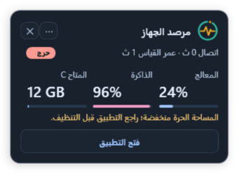

مرصد الجهاز · دفعة تصحيح الويدجت · 25 أكتوبر 2026
واجهة واحدة مدمجة، بلا صفحات تفاصيل
أُلغي اتجاه الويدجت متعدد الصفحات بعد ملاحظتك. وظيفته الملخص السريع؛ التفاصيل والرسوم والجدولة والصيانة داخل التطبيق.
التغيير
حالة الاتصال وحداثة القياس، المعالج والذاكرة والمساحة، أهم تنبيه، وزر واضح لفتح التطبيق. لا توسعة ولا أزرار السابق والتالي ولا منطقة تمرير داخل الويدجت. تبقى خيارات المظهر والسلوك في قوائم قصيرة مجمعة.
الهوية المشتركة والشفافية ووضوح النصوص وحفظ الموضع وسلوك الإخفاء محفوظة ضمن الفحوص المسجلة.
دليل من المصدر الفعلي — رسم معزول
إطار الويدجت في الحالات الثلاث المقاسة340×248 DIP، وثمانية عناصر داخل حدودها، وثلاثة أزرار فقط. الاختبار عند96 DPI وبيانات مصطنعة؛ ليس لقطة من نافذة المستخدم أو دليلًا على جميع درجات تكبير Windows.

تنبيه واضح دون توسعة أو صفحات. حكم المراجعة المستقلة.
التحقق والتفعيل
تقرير مرصد الجهاز: 2026-10-25 21:01
المراحل الفاشلة: 0 من 20
الفحوص المتخطاة: 0 (التغطية غير مكتملة إن تجاوزت صفرًا)
استُبدلت سبع مجموعات مرتبطة ببنية الويدجت التفصيلية المحذوفة باختبار جامع للويدجت المدمج، مع إبقاء فحص أمان النوافذ والقوائم الأصلية. اختبار شارت الويدجت القديم تاريخي لأن الشارت لم يعد داخل الويدجت؛ فحوص رسوم التطبيق باقية.
أُعيد تشغيل الويدجت بعد التحقق؛ حُفظت إعدادات المظهر والعتامة. سجل التفعيل: الأدلة التشغيلية. سجل الفحوص: النتائج.
ما لم يكتمل
منع التمرير داخل جميع صفحات التطبيق لم يكتمل في هذه الدفعة. بقي مصدر التطبيق على نسخة التباين السابقة، ولم يُدمج حل عام يغيّر بنيته أو يحجب البيانات. يحتاج ذلك معالجة داخل كل صفحة مع الحفاظ على الحقول والتركيز والرسوم.
فحص المتصفح الفعلي محجوب بإذن الأداة المحفوظ؛ لا تعني فحوص المصدر والعناصر الأصلية المعزولة اعتمادًا بصريًا لكل صفحات التطبيق أو لقطة من سطح المكتب الحي.
المعايير والتتبع
المعايير وقائمة التحقق — الإصدار2.0.0 · سجل هذه الدفعة
قائمة التحقق لا تبدأ بحالات نجاح تلقائية. نتائج الإصلاحات السابقة تبقى سجلات تاريخية بإصداراتها.
بصمة الويدجت:
78e1e1790941fd6337a507b9daa98fe30e5157376f7159667ef2d141a6c66114
بصمة التطبيق:
136c93716c913d34cc51ff348d2e7d98a00dcb543ab1abf488d6aac97400f33c